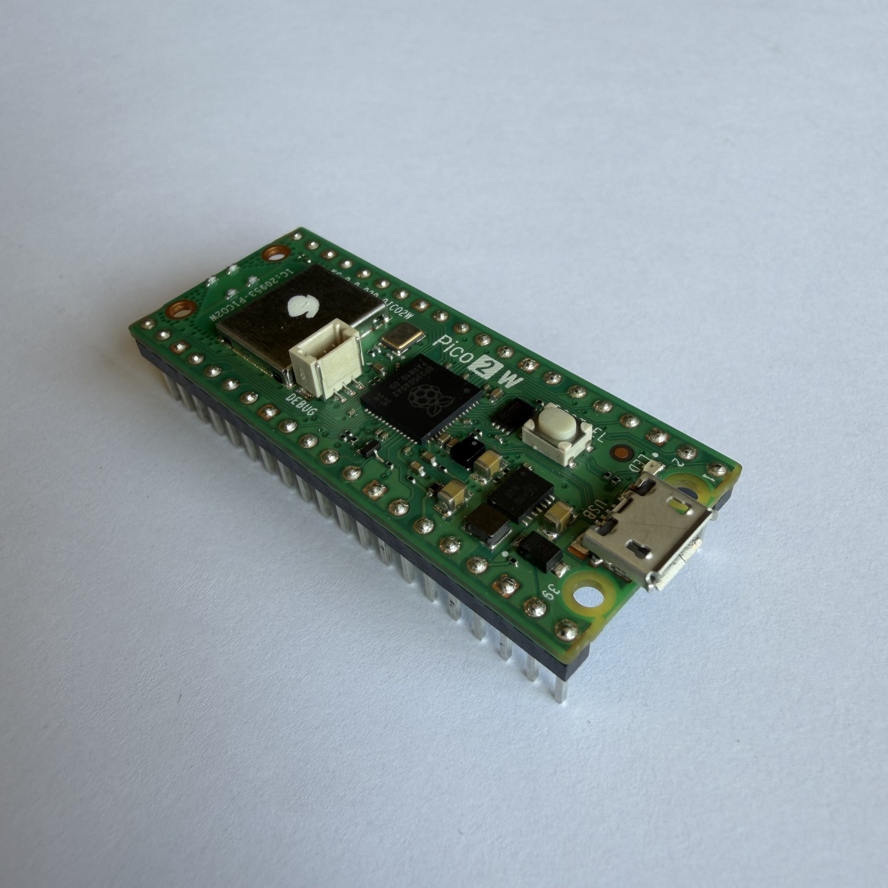
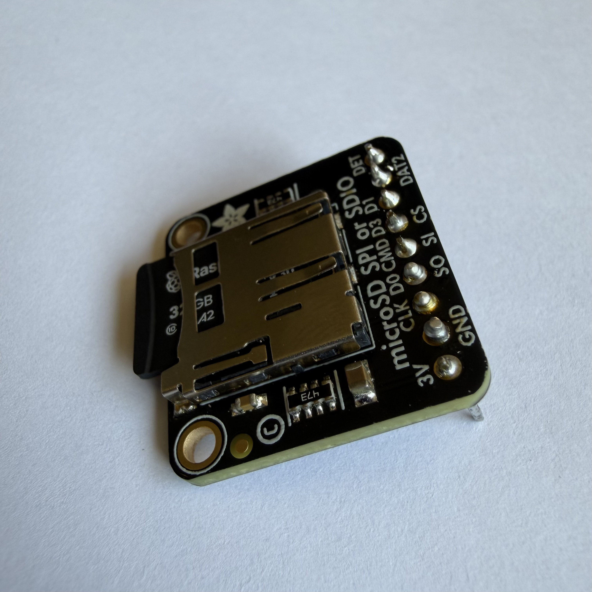
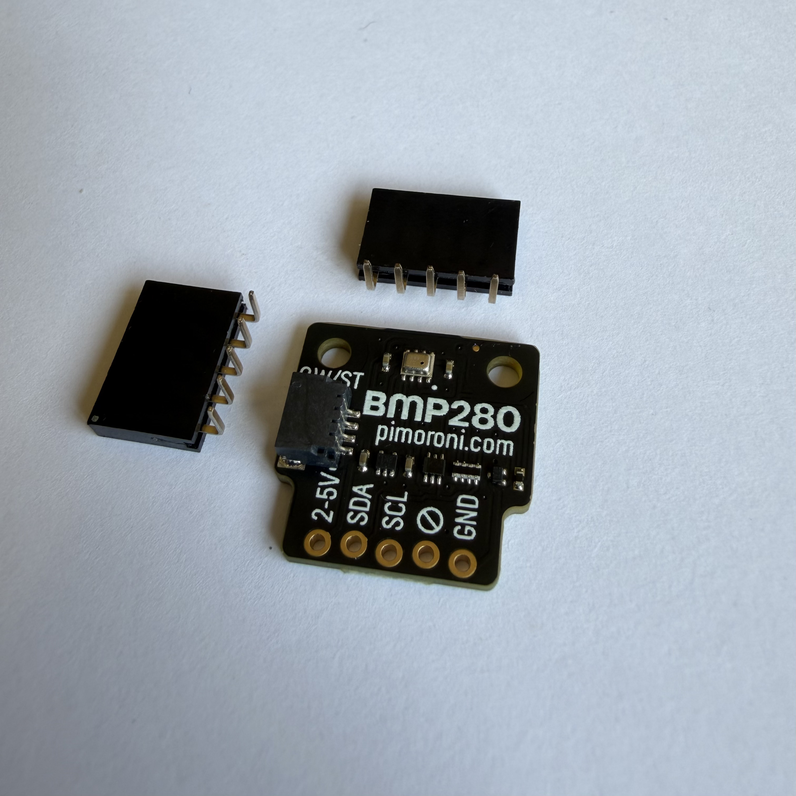
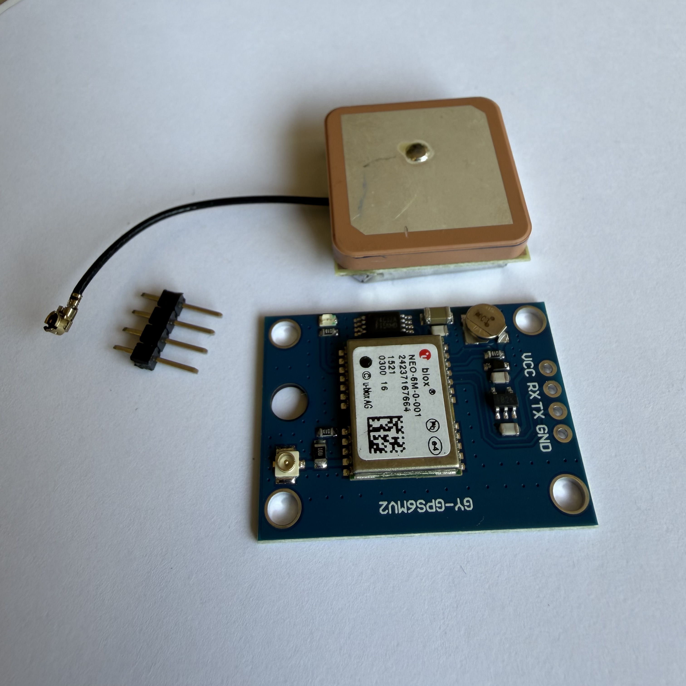
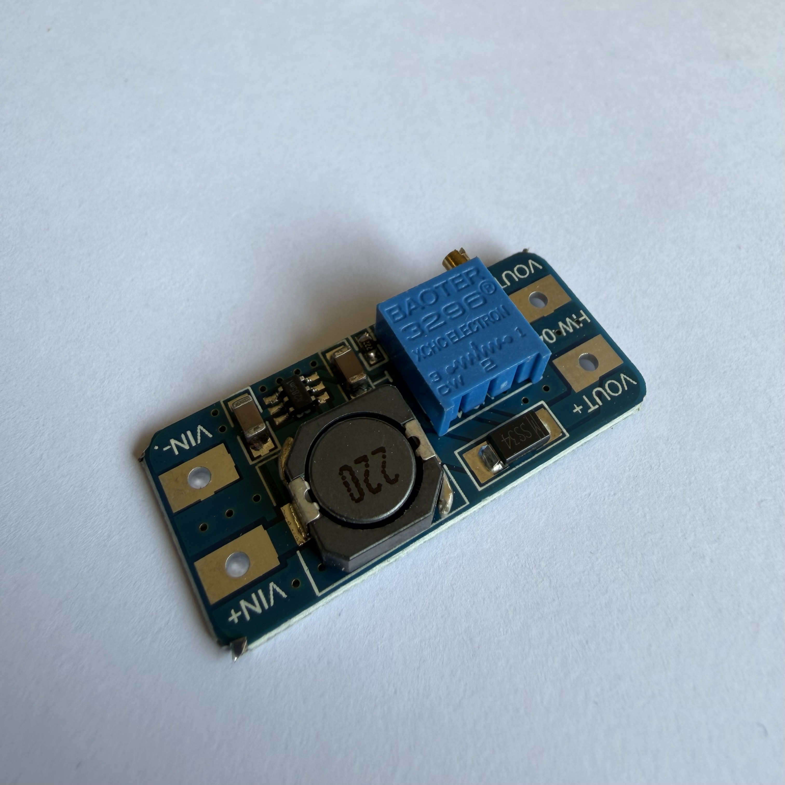
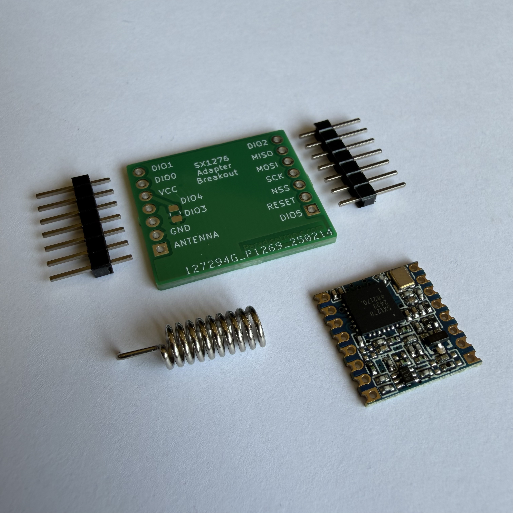

The hardware architecture of SkySense is built around reliable and energy-efficient components
capable of collecting and transmitting environmental data during the mission.
The core of the system is a Raspberry Pi Pico 2, connected to multiple sensors and communication
modules. These include a BMP280 sensor for pressure, temperature and altitude measurements, and an air
quality sensor for detecting harmful gases and particulate matter.
For communication with the ground station, the CanSat uses a LoRa SX1276 868 MHz module with antenna,
enabling long-range and low-power data transmission. Data is also stored locally using an SD card module
to ensure redundancy and reliability.
The system is powered by a compact battery module designed to provide stable energy throughout the
mission while maintaining low weight and power consumption.


The main controller of the system, responsible for reading sensor data and managing all operations.

Used to store data locally during the mission, ensuring no data is lost in case of transmission issues.

Measures atmospheric pressure and temperature, essential for the primary mission.

Provides real-time position data, allowing tracking of the CanSat during descent.

Regulates and increases voltage to supply the components with the required power.

Enables long-range communication with the ground station, transmitting data in real time.